Matter as Driven Energy¶
Rabi-like Transition¶
Rabi Oscillation
Rabi oscillations happens when a driven field is applied to a quantum system. A simple case would be a driven field 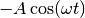 is applied to a system with Hamiltonian
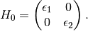
The overall Hamiltonian becomes
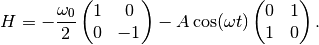
Using Pauli matrices, this can be simplified,
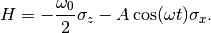
An ansatz about the state is that we can always write down the solutions to this system as
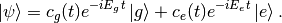
We also know that in 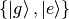 basis, we have 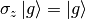 and 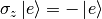. Thus the Schroding equation is reduced to
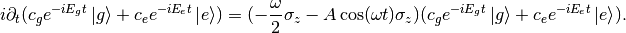
Simplify the equation and write down the equations for both 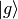 and 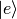, I have
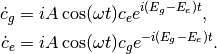
Notice that we can write 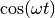 as 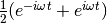. The equations becomes
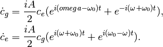
where I used 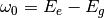. I assume this is larger than 0.
The rotation wave approximation is that since the term with angular frequency 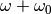 is much larger than 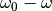. I would drop it and only capture the overall behavior.
The equation we have is
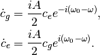
So the problem becomes solvable.
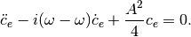
The solution to this is simply determined by solving out the characteristic equation, which is
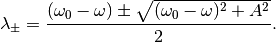
The general solution to 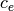 is
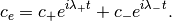
Suppose we have initial condition that
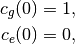
the solutions should be
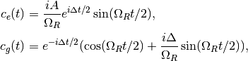
where we defined 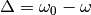 and the Rabi frequency 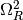 is defined as 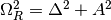.
The probability for the system to stay on a state is
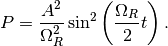
In vacuum energy eigenbasis, we can write down the Hamiltonian for neutrino oscillations in matter,
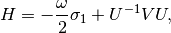
where the transformation matrix was calculated in the previous chapter. The expression for this Hamiltonian, as we plug in the transformation, is
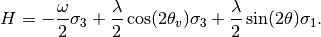
Comparing with The Simple Case of Rabi Oscillation
The extra term compared with the Rabi oscillation we worked out is
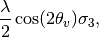
which is also the troble since here  is time dependent.
is time dependent.
Hamiltonian Vector
This Hamiltonian forms a vector
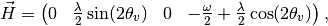
in the complate basis
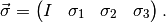
So that

To solve the problem, we use the ansatz that
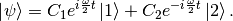
In the proper basis, we also have
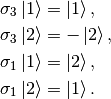
Plug in these into Schrodinger equation,
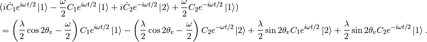
Collect terms we get two equations,
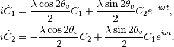
Write down the expression for 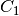 from the second equation and the expression for 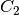 from the first equation,
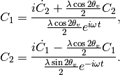
The Equations
The equations should be analyzed term by term.

The red terms are the new math, without which the equation given a periodic matter potential will be exactly the same as the Rabi flopping we worked out. The red terms works as acuumulated oscillation due to all the values of or .
To see this effect more clearly, the solutions with the blue Rabi flopping terms are worked out for both equations.

Given initial condition that 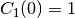 and 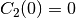, we anticiptate the the new red term for 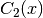 only works as 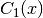 is populted to through Rabi flopping.
Notice that this term will give us more complicated oscillatary result since it will mix up with the Rabi flopping result. The phase in these results won’t just simply go away when the moduli are calculated.
The other view of these equations is to look at the expressions
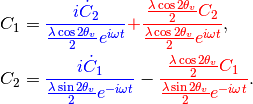
It means that the new terms added new mixing contributions to and . But the idea is that we don’t really know whether it is enhencement or reduction.
Combine the two equations we get the equation for 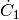 which is used to get the equation for . Simplification can be done and it leads to
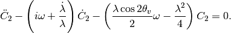
Since the equation doesn’t corresponds to a clear and simple physics picture, we need to understand term by term.
Review of The Hamiltonian
The Hamiltonian we are dealing with is
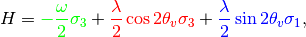
where the green term contributes to the two eigenenergies, the red term contributes to the two eigenenergies but with a time or space dependence, the last blue term is the flopping term.
One of the obstacles of further approximations to Rabi oscillation is that the term  is not much smaller than the flopping term which means it can not be dropped.
is not much smaller than the flopping term which means it can not be dropped.
Analytical Attack¶
Numerical Results¶
For simplicity we consider periodic matter potential, 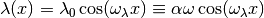. Also for easy calculation, we define  . Thus
. Thus  and
and  fully describes the periodic matter potential.
fully describes the periodic matter potential.
The numerical results seems to be STRANGE,

Numerical result using Mathematica.

Numerical result using Mathematica.

Numerical result using python.

Numerical result using python.
The second order equation of can also be solved numerically.

Solving the second order equation of numerically.

The difference between solving the two first order equations and the one second order equation. The two methods are not exactly the same even though they are the same equations. This is probability because numpy.odeint is used instead of numpy.ode.
Approximation¶
We use periodic matter potential and define .
To verify this approximation, we also need to write down the equation after RWA,
We have the two real equations for it, which is written as a matrix equation.

where we defined .
Meanwhile, the original equations becomes
To solve them numerically, we could decompose it into four real equations.
![- \frac{d C_{1,I}}{d \bar x} &= \frac{\alpha \cos 2\theta_v}{2} \cos (\beta \bar x) C_{1,R} + \frac{\alpha \sin 2\theta_v}{2} \cos (\beta \bar x) C_{2,R} \cos(\bar x) + \frac{\alpha \sin 2\theta_v}{2} \cos (\beta \bar x) C_{2,I} \sin(\bar x) \\
\frac{d C_{1,R}}{d\bar x}& = \frac{\alpha \cos 2\theta_v}{2} \cos (\beta \bar x) C_{1,I} - \frac{\alpha \sin 2\theta_v}{2} \cos (\beta \bar x) C_{2,R} \sin(\bar x) + \frac{\alpha \sin 2\theta_v}{2} \cos (\beta \bar x) C_{2,I} \cos(\bar x) \\
-\frac{d C_{2,I}}{d\bar x}&= -\frac{\alpha \cos 2\theta_v}{2} \cos (\beta \bar x) C_{2,R} + \frac{\alpha \sin 2\theta_v}{2} \cos (\beta \bar x) C_{1,R}\cos \bar x - \frac{\alpha \sin 2\theta_v}{2} \cos (\beta \bar x) C_{1,I}\sin \bar x \\
\frac{d C_{2,R}}{d\bar x} & = -\frac{\alpha \cos 2\theta_v}{2} \cos (\beta \bar x) C_{2,I} + \frac{\alpha \sin 2\theta_v}{2} \cos (\beta \bar x) C_{1,R} \sin \bar x + \frac{\alpha \sin 2\theta_v}{2}\cos (\beta \bar x) C_{1,I} \cos \bar x .](_images/math/40a637430b4ef0eae7aa373a07b1b404973d8298.png)
Consequently, we have the matrix equation as the original equations,
![\frac{d}{d\bar x}\begin{pmatrix} C_{1,R}\\ C_{1,I} \\ C_{2,R} \\ C_{2,I} \end{pmatrix} = \frac{1}{2}\begin{pmatrix}
0 & \alpha\cos 2\theta_v & - \alpha \sin 2\theta_v\sin \bar x & \alpha \sin 2\theta_v \cos \bar x \\
-\alpha\cos 2\theta_v & 0 & -\alpha\sin 2\theta_v \cos \bar x & - \alpha \sin 2\theta_v\sin\bar x \\
\alpha \sin 2\theta_v \sin \bar x & \alpha \sin 2\theta_v \cos \bar x & 0 & -\alpha\cos 2\theta_v \\
-\alpha \sin 2\theta_v \cos \bar x & \alpha \sin 2\theta_v \sin \bar x & \alpha \cos 2\theta_v & 0
\end{pmatrix} \begin{pmatrix} C_{1,R}\\ C_{1,I} \\ C_{2,R} \\ C_{2,I} \end{pmatrix}.](_images/math/1edb25857fa0cbc9e3530f16864c46cf17998b42.png)
We first consider the case that and which means that the modulation of eigenenergies are not very fast. Translate these conditions into math, we require that
The red term works as a modulation of the eigenenergies.
The blue term flips the states with a Rabi flopping rate approximately. The rate in this case could be
where is a function of
 ,
,So we define and . The survival probability as an approximation becomes
This theoretical prediction is shown in the following figure.

RWA plus slow periodic perturbation (and probabily more hidden approximations) analytical result.